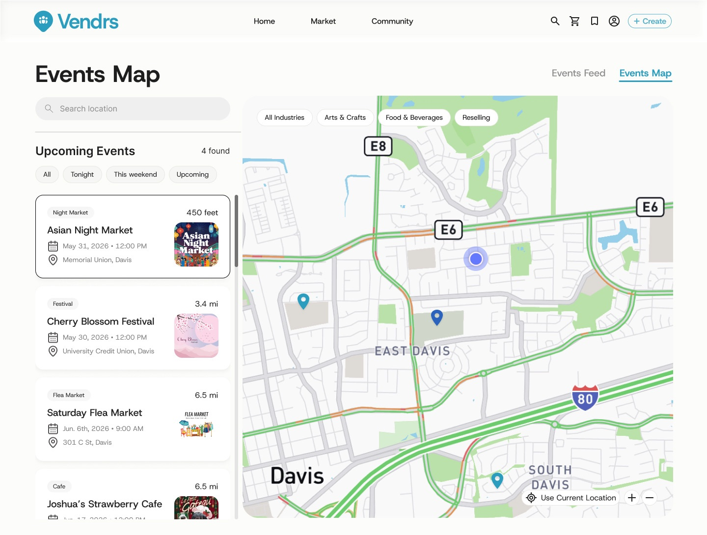
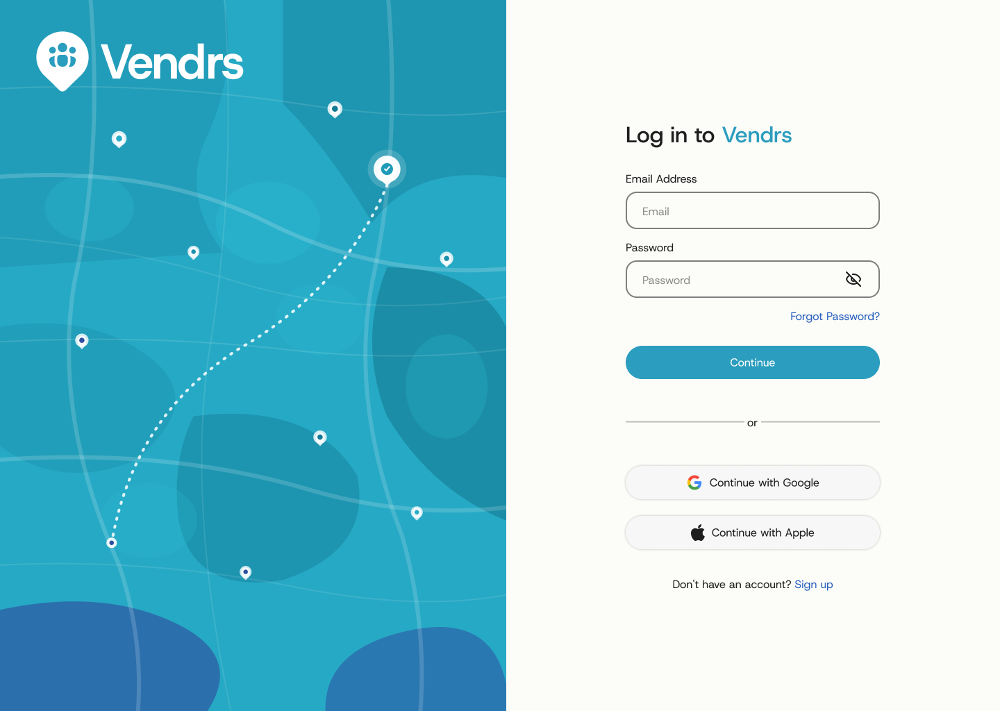
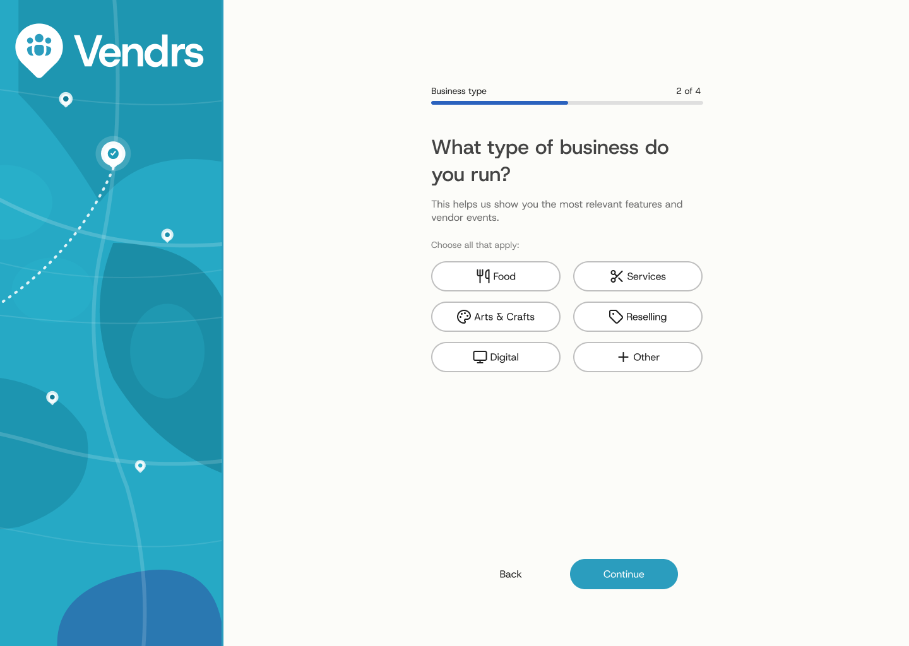

PRODUCT DESIGN
Helping small businesses discover their next market
Vendrs is a platform for Gen Z owners running a shop alongside school. On a team of five, I designed the two features that decide whether they find anywhere to sell: onboarding and the Events Map.

The Events Map: what is nearby on the right, the same events listed by distance on the left.
Five designers, eight weeks, a prompt broad enough to build ten products from
Vendrs is a web platform for people running a small business on their own. The prompt covered operating a business, sharing resources and connecting with a local community, so the real design challenge was scope: deciding which parts deserved real screens in eight weeks, and which were wish list.
I took the two that decide whether an owner ever reaches value at all: getting into the product, and finding somewhere to sell.
- My featuresOnboarding and the Events Map, end to end.
- The shared primitiveBusiness type, picked once, filters the rest of the product.
- The team'sEvents feed, Marketplace, Homepage and Dashboard.
Everything at once, with nothing holding it together
Running a small business means juggling operations, finances and growth all at once, often with no centralized support. Owners struggle to discover local selling opportunities, connect with other business owners nearby, and find the tools and resources they need to run operations smoothly.
Discovery was the loudest of those: a shop lives across group chats, spreadsheets and Instagram DMs, and the thing that actually grows it, getting a table at a market, ran on word of mouth. Owners heard about markets through a friend's story, usually after applications had closed.
Even the word "small business" needed deciding first. The label covers a 500-person company by the SBA's own definition and a student selling earrings at a table, so we chose Gen Z owners running a shop alongside school, close enough through UC Davis markets that we could actually talk to them instead of guessing.
How might we help small business owners operate their businesses, share resources, and connect with their local community through an accessible and intuitive platform?
The question we designed against
They didn't lack ambition. They lacked infrastructure.
20+ survey responses showed how common each problem was, and 10 interviews with art, food and service owners showed why it mattered. Three numbers set the priorities.
Ask for less, and make every answer work twice
Owners abandon tools that demand setup before showing value, so I kept onboarding to four steps and gave each one a job beyond collecting data.
One long profile form
Complete, but it front-loads the work and reads as paperwork before any value arrives.
Four steps, one decision each
Social login opens it, so the highest-friction moment lands before we ask for trust.


Testing still found a weak link: one step read as busywork. I cut it and led with value instead, and completion went up.
Discovery you can see, sorted by what you can reach
Discovery was the loudest pain in research, so I made it spatial. Pins show what is around you, a side panel lists the same events for scanning, and the filters are the business types from onboarding, so a food vendor lands on food events with zero setup.
In the prototype: filter the feed, switch to the map, and selecting an event in the list highlights its pin.
Another events feed
Familiar, but it buries the thing owners judge an event on: can I physically get there.
Map and list as one surface
Two views of one set, synced both ways, sorted by distance and filtered by business type.
Testing found a gap even here: people read the map and the list as separate tools. I tightened the sync until selecting an event in one obviously drove the other.
The boring early decision was the one that compounded
Business type looked like a form field. It became the backbone of discovery: onboarding did real work instead of collecting data, and the Events Map inherited personalisation for free.
The team cut a second, customer-facing flow rather than explain two audiences at once, a smaller product that stayed usable beat a bigger one that didn't. Next I would add messaging so owners can mentor each other, and build that customer-facing side to drive foot traffic back to the vendors.